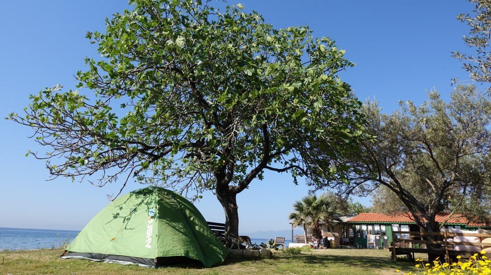
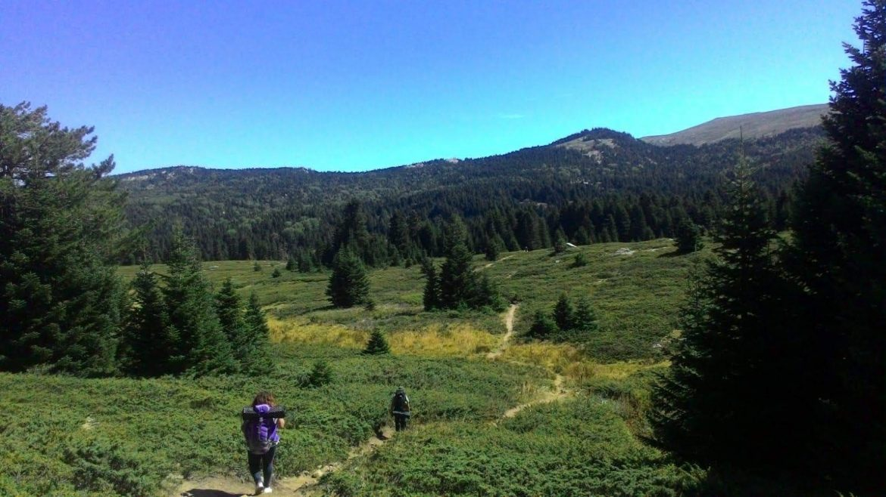
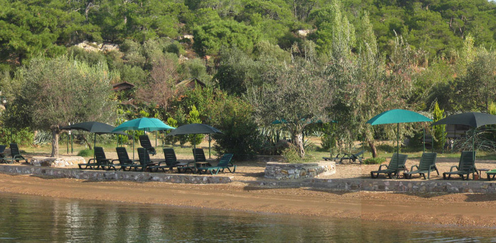
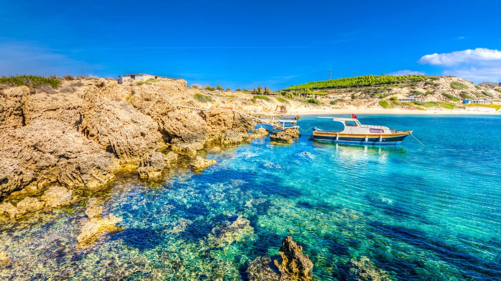
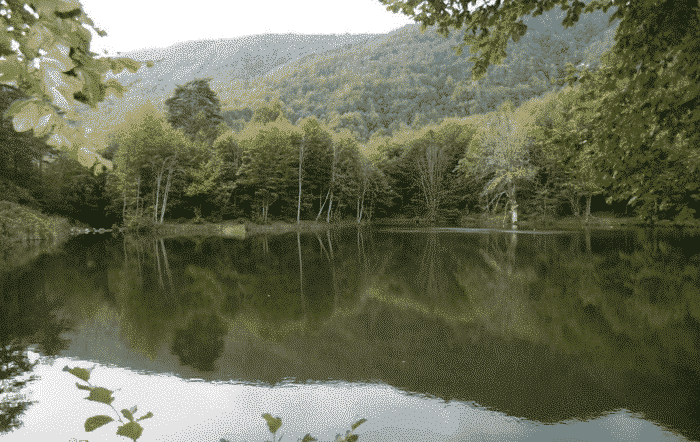
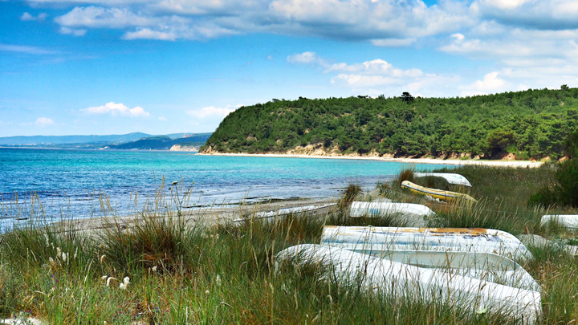
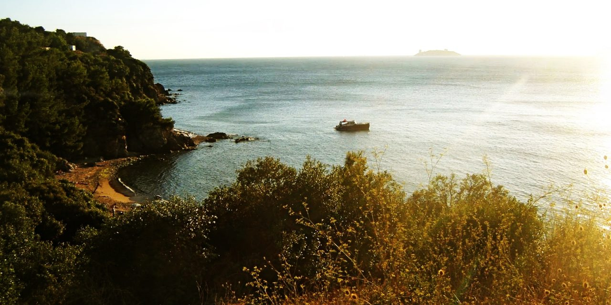
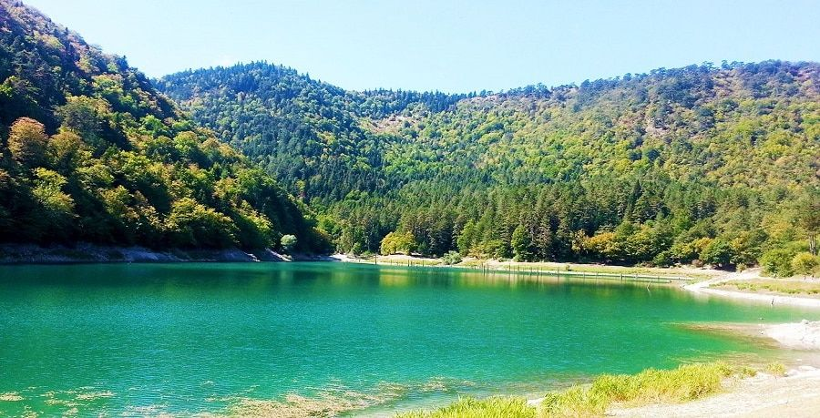
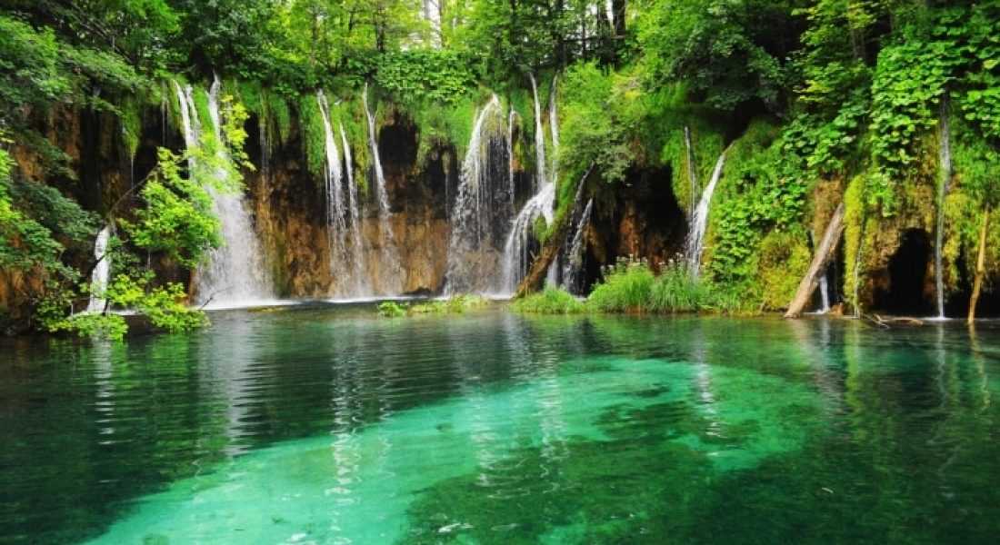
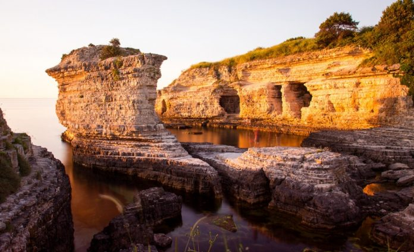

Marmara Bölgesi kamp alanları bakımından oldukça zengin seçenekler sunuyor. Assos, kampçılar tarafından en fazla tercih edilen kamp alanlarından birisi. Doğayla iç içe, sessiz ve sakin bir tatil hayal ediyorsanız Assos Gargara Doğal Tatil Kampı’nı tercih edebilirsiniz. Kamp alanının temiz olmasının yanı sıra kampçılar yemeklerinin de lezzetli olduğu belirtiyor. Hem kamp yapıp hem de az efor sarf etmek isteyenler için ideal bir seçim olabilir.
Uludağ doğal güzellikleriyle her mevsim insanı doğa mucizelerine inandırmayı başarıyor. Yaz sezonunda hizmet veren Uludağ Çobankaya Kamp Alanında da Bursa’nın büyülü atmosferini doya doya yaşayabilirsiniz. Milli Parklar Müdürlüğü’nün himayesindeki kamp alanı hem çadır hem de karavan kampına uygun.
Cunda Adası’nın Midilli Adası’na dönük yüzündeki kamp alanı mavi ve yeşili bir arada yaşayabilmek için en ideal kamp alanlarından biri. Yıl boyu açık olan Cunda Kamp Alanı, hem çadır hem de karavanla kalmaya uygun.
Çanakkale’de bulunan kamp alanlarıyla birden fazla liste hazırlayabiliriz. Fakat hem denize hem de ağaçlık alanlara yakın Yıldızköy ve Bozcaada Kamp Alanları, huzurlu ortamlarıyla ön plana çıkıyor. Her iki kamp alanında da çadır ve karavan kullanılabilir.
Kış mevsimi dışında her mevsim kampçıların en fazla tercih ettiği kamp alanlarından biri olan Erikli Yaylası Kamp Alanı, düzlükte olmasıyla çadır kampı için ideal. Alan; ormanı, deresi, şelaleleri ve doğal çevresiyle ön plana çıkıyor.
Çok sayıda kampçı tarafından tercih edilen Kabatepe Sahili, tesislerin varlığı ile kısa tatilleri değerlendirmek için oldukça uygun. Ayrıca Kabatepe Orman Kampı, Türkiye’deki en gelişmiş kamplar arasında yer alıyor. İhtiyaçlarınızı kolaylıkla karşılayabileceğiniz restoran ve market de kamp alanında bulunuyor.
Özellikle İstanbul’da yaşayan kampçıların tercih ettiği Şile, denize yakınlığı ve yeşillikler içinde olmasıyla kısa tatiller için en iyi seçeneklerden biri. Şile Sahil Köyü’nde hem doğayla iç içe olabilir hem de merkeze kısa sürede ulaşabilirsiniz. İstanbul yakınlarında kamp yapmayı düşünenler için bir diğer seçenek ise Bozcaada’da bulunan Madam Martha Koyu. Yeşil ve mavinin bir araya geldiği merkezden bağımsız ama bir o kadar da yakın olan koy, özellikle yaz ayları için en ideal seçeneklerden biri.
Kampçılar tarafından en fazla tercih edilen kamp alanlarından biri de Sülüklü Göl Kamp Alanı. Tabiatı koruma ve sit alanı statüsünde bulunan göl kenarına konaklama yeri inşa edilmediği için el değmemiş bir doğa sunuyor. Bu yüzden kamp yapmak için izin almak gerekebiliyor ve elbette, doğayı korumak için belli prosedürleri de yerine getirmek gerekiyor. Sülüklü Göl Kamp Alanında çeşitli hayvanlarla karşılaşmaya ve yaz aylarında sivrisineklerle savaşmaya hazır olmanız gerek.
Hızır Kamp; tesisi, işletmecileri, uygun fiyatları ve doğasıyla en fazla tercih edilen kamp alanlarından biri. Hızır Kamp’ta kendi çadırınızda konaklayabileceğiniz gibi taş, ahşap ve ağaç evlerde de kalabiliyorsunuz. Gitmeden önce rezervasyon yaptırmayı unutmayın.
Marmara bölgesinde yaşayan kampçılar tarafından en fazla tercih edilen Kerpe, Kefren ve Kumcağız Sahillerinde tesis aramadan denize karşı kamp yapabilirsiniz. Sahillerin etrafında bulunan tesislerde kalmayı da seçebilirsiniz. Mahalle içinde oldukları için ihtiyaçlarınızı kolaylıkla karşılayabileceğiniz bu sahiller, çadır kampı için de uygun. Kocaeli de kamp alanları bakımından oldukça zengin. Şehrin çevresinde kamp yapılabilecek diğer alanlardan birkaçı; Kuzu Yaylası Kamp Alanı, Kaya Üstü Kamp Alanı, Aytepe Kamp Alanı, Molla Yakup Çayırı Kamp Alanı ve Menekşe Yaylası Kamp Alanı.
